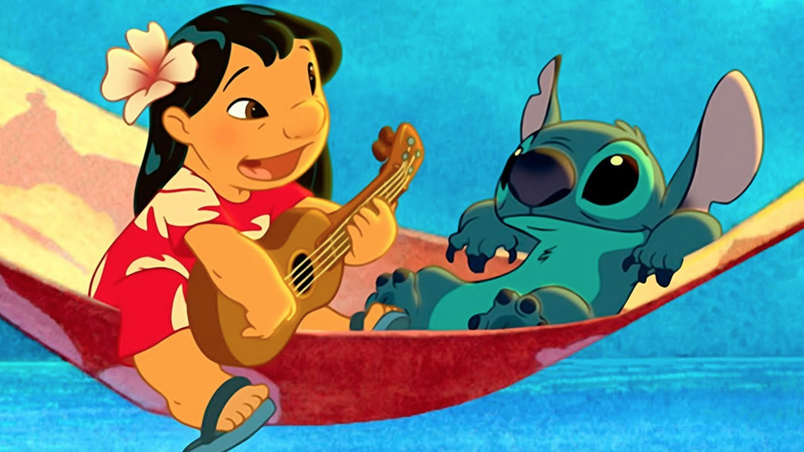

About Stitch
Stitch is a furry blue alien from the cartoon named "Lilo and Stitch. He si also known as "Experiment 626", it being an illegal genetic experiment created by Jumba Jookiba. His primary function was originally to destroy everything he touhes
Stitch and his friends
Facts about Stitch
- He has 6 legs
- He cannot speak fluently
- He is an illegal experiment
Stitch's Friends
Stitch has some friends, but his best friend is Lilo, a ittle Hawaiian girl. click their names to find out more about them: